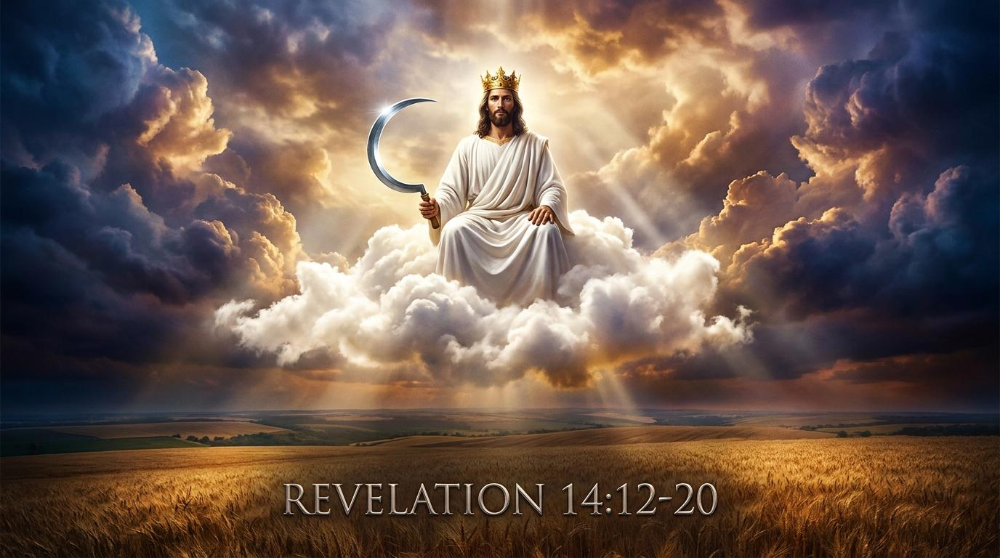

🛡️ 在風暴中持守：聖徒的忍耐與榮耀之福
經文範圍：啟14:12-13
關鍵詞解析：
- 忍耐 (hypomonē)：並非消極的無奈忍受，而是「在重壓之下依然堅定站立的積極力量」。
- 息了 (anapauō)：指從繁重、疲憊的勞動中獲得釋放與恢復。

主耶和華，掌管歷史與永恆的上帝，我們來到祢的寶座前。在這個充滿妥協與誘惑的世代中，求祢賜給我們聖徒的忍耐，使我們能堅守祢的誡命與耶穌基督的真道。當我們面對世上的勞苦與逼迫時，求祢開我們的眼睛，讓我們看見天上那永恆的安息，並明白在主裡面的勞苦絕不徒然。也懇求祢將那最終收割的異象放在我們心中，讓我們對祢的聖潔與審判心存敬畏，把握時機廣傳福音，搶救靈魂。奉主耶穌基督得勝的名求，阿們。
經文範圍：啟14:12-13
關鍵詞解析：
「當基督呼召一個人時，祂是呼召他來死。」—— 潘霍華
各位弟兄姊妹，平安！我們今天來到《啟示錄》第14章的後半段。在這些象徵符號的背後，約翰其實正在處理一個極其真實的問題：第一世紀小亞細亞的教會，正面臨著羅馬帝國極大的逼迫。
今天，我們要透過三段經文來看：兩種收割的抉擇：永恆安息與上帝震怒。這不只是遙遠的啟示，更是今日你我面對世界價值觀時的真實抉擇。